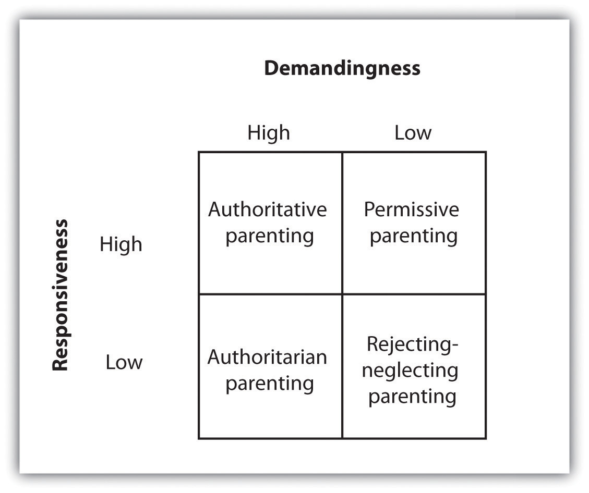

Until the 1970s, psychologists tended to treat adulthood as a single developmental stage, with few or no distinctions made among the various periods that we pass through between adolescence and death. Present-day psychologists realize, however, that physical, cognitive, and emotional responses continue to develop throughout life, with corresponding changes in our social needs and desires. Thus the three stages of early adulthood, middle adulthood, and late adulthood each has its own physical, cognitive, and social challenges.
In this section, we will consider the development of our cognitive and physical aspects that occur during early adulthoodThe ages between 25 and 45. and middle adulthoodThe ages between 45 and 65.—roughly the ages between 25 and 45 and between 45 and 65, respectively. These stages represent a long period of time—longer, in fact, than any of the other developmental stages—and the bulk of our lives is spent in them. These are also the periods in which most of us make our most substantial contributions to society, by meeting two of Erik Erikson’s life challenges: We learn to give and receive love in a close, long-term relationship, and we develop an interest in guiding the development of the next generation, often by becoming parents.
One thing that you may have wondered about as you grew up, and which you may start to think about again if you decide to have children yourself, concerns the skills involved in parenting. Some parents are strict, others are lax; some parents spend a lot of time with their kids, trying to resolve their problems and helping to keep them out of dangerous situations, whereas others leave their children with nannies or in day care. Some parents hug and kiss their kids and say that they love them over and over every day, whereas others never do. Do these behaviors matter? And what makes a “good parent”?
We have already considered two answers to this question, in the form of what all children require: (1) babies need a conscientious mother who does not smoke, drink, or use drugs during her pregnancy, and (2) infants need caretakers who are consistently available, loving, and supportive to help them form a secure base. One case in which these basic goals are less likely to be met is when the mother is an adolescent. Adolescent mothers are more likely to use drugs and alcohol during their pregnancies, to have poor parenting skills in general, and to provide insufficient support for the child (Ekéus, Christensson, & Hjern, 2004).Ekéus, C., Christensson, K., & Hjern, A. (2004). Unintentional and violent injuries among pre-school children of teenage mothers in Sweden: A national cohort study. Journal of Epidemiology and Community Health, 58(8), 680–685. As a result, the babies of adolescent mothers have higher rates of academic failure, delinquency, and incarceration in comparison to children of older mothers (Moore & Brooks-Gunn, 2002).Moore, M. R., & Brooks-Gunn, J. (2002). Adolescent parenthood. In M. H. Bornstein (Ed.), Handbook of parenting: Being and becoming a parent (2nd ed., Vol. 3, pp. 173–214). Mahwah, NJ: Lawrence Erlbaum Associates.
Normally, it is the mother who provides early attachment, but fathers are not irrelevant. In fact, studies have found that children whose fathers are more involved tend to be more cognitively and socially competent, more empathic, and psychologically better adjusted, compared with children whose fathers are less involved (Rohner & Veneziano, 2001).Rohner, R. P., & Veneziano, R. A. (2001). The importance of father love: History and contemporary evidence. Review of General Psychology, 5(4), 382–405. In fact, Amato (1994)Amato, P. R. (1994). Father-child relations, mother-child relations, and offspring psychological well-being in adulthood. Journal of Marriage and the Family, 56, 1031–1042. found that, in some cases, the role of the father can be as or even more important than that of the mother in the child’s overall psychological health and well-being. Amato concluded, “Regardless of the quality of the mother-child relationship, the closer adult offspring were to their fathers, the happier, more satisfied, and less distressed they reported being” (p. 1039).
As the child grows, parents take on one of four types of parenting stylesParental behaviors that determine the nature of parent-child interactions.—parental behaviors that determine the nature of parent-child interactions and that guide their interaction with the child. These styles depend on whether the parent is more or less demanding and more or less responsive to the child (see Figure 6.11 "Parenting Styles"). Authoritarian parents are demanding but not responsive. They impose rules and expect obedience, tending to give orders (“Eat your food!”) and enforcing their commands with rewards and punishment, without providing any explanation of where the rules came from, except “Because I said so!” Permissive parents, on the other hand, tend to make few demands and give little punishment, but they are responsive in the sense that they generally allow their children to make their own rules. Authoritative parents are demanding (“You must be home by curfew”), but they are also responsive to the needs and opinions of the child (“Let’s discuss what an appropriate curfew might be”). They set rules and enforce them, but they also explain and discuss the reasons behind the rules. Finally, rejecting-neglecting parents are undemanding and unresponsive overall.
Figure 6.11 Parenting Styles
Parenting styles can be divided into four types, based on the combination of demandingness and responsiveness. The authoritative style, characterized by both responsiveness and also demandingness, is the most effective.
Many studies of children and their parents, using different methods, measures, and samples, have reached the same conclusion—namely, that authoritative parenting, in comparison to the other three styles, is associated with a wide range of psychological and social advantages for children. Parents who use the authoritative style, with its combination of demands on the children as well as responsiveness to the children’s needs, have kids who have better psychological adjustment, school performance, and psychosocial maturity, compared with parents who use the other styles (Baumrind, 1996; Grolnick & Ryan, 1989).Baumrind, D. (1996). The discipline controversy revisited. Family Relations, 45(4), 405–414; Grolnick, W. S., & Ryan, R. M. (1989). Parent styles associated with children’s self-regulation and competence in school. Journal of Educational Psychology, 81(2), 143–154. On the other hand, there are at least some cultural differences in the effectiveness of different parenting styles. Although the reasons for the differences are not completely understood, strict authoritarian parenting styles seem to work better in African American families than in European American families (Tamis-LeMonda, Briggs, McClowry, & Snow, 2008),Tamis-LeMonda, C. S., Briggs, R. D., McClowry, S. G., & Snow, D. L. (2008). Challenges to the study of African American parenting: Conceptualization, sampling, research approaches, measurement, and design. Parenting: Science and Practice, 8(4), 319–358. and better in Chinese families than in American families (Chang, Lansford, Schwartz, & Farver, 2004).Chang, L., Lansford, J. E., Schwartz, D., & Farver, J. M. (2004). Marital quality, maternal depressed affect, harsh parenting, and child externalising in Hong Kong Chinese families. International Journal of Behavioral Development, 28(4), 311–318.
Despite the fact that different parenting styles are differentially effective overall, every child is different and parents must be adaptable. Some children have particularly difficult temperaments, and these children require more parenting. Because these difficult children demand more parenting, the behaviors of the parents matter more for the children’s development than they do for other, less demanding children who require less parenting overall (Pleuss & Belsky, 2010).Pluess, M., & Belsky, J. (2010). Differential susceptibility to parenting and quality child care. Developmental Psychology, 46(2), 379–390. These findings remind us how the behavior of the child can influence the behavior of the people in his or her environment.
Although the focus is on the child, the parents must never forget about each other. Parenting is time consuming and emotionally taxing, and the parents must work together to create a relationship in which both mother and father contribute to the household tasks and support each other. It is also important for the parents to invest time in their own intimacy, as happy parents are more likely to stay together, and divorce has a profoundly negative impact on children, particularly during and immediately after the divorce (Burt, Barnes, McGue, & Iaconon, 2008; Ge, Natsuaki, & Conger, 2006).Burt, S. A., Barnes, A. R., McGue, M., & Iacono, W. G. (2008). Parental divorce and adolescent delinquency: Ruling out the impact of common genes. Developmental Psychology, 44(6), 1668–1677; Ge, X., Natsuaki, M. N., & Conger, R. D. (2006). Trajectories of depressive symptoms and stressful life events among male and female adolescents in divorced and nondivorced families. Development and Psychopathology, 18(1), 253–273.
Compared with the other stages, the physical and cognitive changes that occur in the stages of early and middle adulthood are less dramatic. As individuals pass into their 30s and 40s, their recovery from muscular strain becomes more prolonged, and their sensory abilities may become somewhat diminished, at least when compared with their prime years, during the teens and early 20s (Panno, 2004).Panno, J. (2004). Aging: Theories and potential therapies. New York, NY: Facts on File Publishers. Visual acuity diminishes somewhat, and many people in their late 30s and early 40s begin to notice that their eyes are changing and they need eyeglasses. Adults in their 30s and 40s may also begin to suffer some hearing loss because of damage to the hair cells (cilia) in the inner ear (Lacher-Fougëre & Demany, 2005).Lacher-Fougëre, S., & Demany, L. (2005). Consequences of cochlear damage for the detection of inter-aural phase differences. Journal of the Acoustical Society of America, 118, 2519–2526. And it is during middle adulthood that many people first begin to suffer from ailments such as high cholesterol and high blood pressure as well as low bone density (Shelton, 2006).Shelton, H. M. (2006). High blood pressure. Whitefish, MT: Kessinger Publishers. Corresponding to changes in our physical abilities, our cognitive and sensory abilities also seem to show some, but not dramatic, decline during this stage.
The stages of both early and middle adulthood bring about a gradual decline in fertility, particularly for women. Eventually, women experience menopauseThe cessation of the menstrual cycle, which usually occurs at around age 50., the cessation of the menstrual cycle, which usually occurs at around age 50. Menopause occurs because of the gradual decrease in the production of the female sex hormones estrogen and progesterone, which slows the production and release of eggs into the uterus. Women whose menstrual cycles have stopped for 12 consecutive months are considered to have entered menopause (Minkin & Wright, 2004).Minkin, M. J., & Wright, C. V. (2004). A woman’s guide to menopause and perimenopause. New Haven, CT: Yale University Press.
Researchers have found that women’s responses to menopause are both social as well as physical, and that they vary substantially across both individuals and cultures. Within individuals, some women may react more negatively to menopause, worrying that they have lost their femininity and that their final chance to bear children is over, whereas other women may regard menopause more positively, focusing on the new freedom from menstrual discomfort and unwanted pregnancy. In Western cultures such as in the United States, women are likely to see menopause as a challenging and potentially negative event, whereas in India, where older women enjoy more social privileges than do younger ones, menopause is more positively regarded (Avis & Crawford, 2008).Avis, N. E., & Crawford, S. (2008). Cultural differences in symptoms and attitudes toward menopause. Menopause Management, 17(3), 8–13.
Menopause may have evolutionary benefits. Infants have better chances of survival when their mothers are younger and have more energy to care for them, and the presence of older women who do not have children of their own to care for (but who can help out with raising grandchildren) can be beneficial to the family group. Also consistent with the idea of an evolutionary benefit of menopause is that the decline in fertility occurs primarily for women, who do most of the child care and who need the energy of youth to accomplish it. If older women were able to have children they might not be as able to effectively care for them. Most men never completely lose their fertility, but they do experience a gradual decrease in testosterone levels, sperm count, and speed of erection and ejaculation.
Perhaps the major marker of adulthood is the ability to create an effective and independent life. Whereas children and adolescents are generally supported by parents, adults must make their own living and must start their own families. Furthermore, the needs of adults are different from those of younger persons.
Although the timing of the major life events that occur in early and middle adulthood vary substantially across individuals, they nevertheless tend to follow a general sequence, known as a social clockThe culturally preferred “right time” for major life events, such as moving out of the house, getting married, and having children.. The social clock refers to the culturally preferred “right time” for major life events, such as moving out of the childhood house, getting married, and having children. People who do not appear to be following the social clock (e.g., young adults who still live with their parents, individuals who never marry, and couples who choose not to have children) may be seen as unusual or deviant, and they may be stigmatized by others (DePaulo, 2006; Rook, Catalano, & Dooley, 1989).DePaulo, B. M. (2006). Singled out: How singles are stereotyped, stigmatized and ignored, and still live happily ever after. New York, NY: St. Martin’s Press; Rook, K. S., Catalano, R. C., & Dooley, D. (1989). The timing of major life events: Effects of departing from the social clock. American Journal of Community Psychology, 17, 223–258.
Although they are doing it later, on average, than they did even 20 or 30 years ago, most people do eventually marry. Marriage is beneficial to the partners, both in terms of mental health and physical health. People who are married report greater life satisfaction than those who are not married and also suffer fewer health problems (Gallagher & Waite, 2001; Liu & Umberson, 2008).Gallagher, M., & Waite, L. J. (2001). The case for marriage: Why married people are happier, healthier, and better off financially. New York, NY: Random House; Liu, H., & Umberson, D. (2008). The times they are a changin’: Marital status and health differentials from 1972 to 2003. Journal of Health and Social Behavior, 49, 239–253.
Divorce is more common now than it was 50 years ago. In 2003 almost half of marriages in the United States ended in divorce (Bureau of the Census, 2007),Bureau of the Census. (2007). Statistical abstract of the United States 2006 (p. 218). Washington, DC: U.S. Government Printing Office. although about three quarters of people who divorce will remarry. Most divorces occur for couples in their 20s, because younger people are frequently not mature enough to make good marriage choices or to make marriages last. Marriages are more successful for older adults and for those with more education (Goodwin, Mosher, & Chandra, 2010).Goodwin, P. Y., Mosher, W. D., Chandra A. (2010, February). Marriage and cohabitation in the United States: A statistical portrait based on Cycle 6 (2002) of the National Survey of Family Growth. Vital Health Statistics 23(28), 1–45. Retrieved from National Center for Health Statistics, Centers for Disease Control and Prevention, website: http://www.cdc.gov/nchs/data/series/sr_23/sr23_028.pdf
Parenthood also involves a major and long-lasting commitment, and one that can cause substantial stress on the parents. The time and finances invested in children create stress, which frequently results in decreased marital satisfaction (Twenge, Campbell, & Foster, 2003).Twenge, J., Campbell, W., & Foster, C. (2003). Parenthood and marital satisfaction: A meta-analytic review. Journal of Marriage and Family, 65(3), 574–583. This decline is especially true for women, who bear the larger part of the burden of raising the children and taking care of the house, despite the fact they increasingly also work and have careers.
Despite the challenges of early and middle adulthood, the majority of middle-aged adults are not unhappy. These years are often very satisfying, as families have been established, careers have been entered into, and some percentage of life goals has been realized (Eid & Larsen, 2008).Eid, M., & Larsen, R. J. (Eds.). (2008). The science of subjective well-being. New York, NY: Guilford Press.